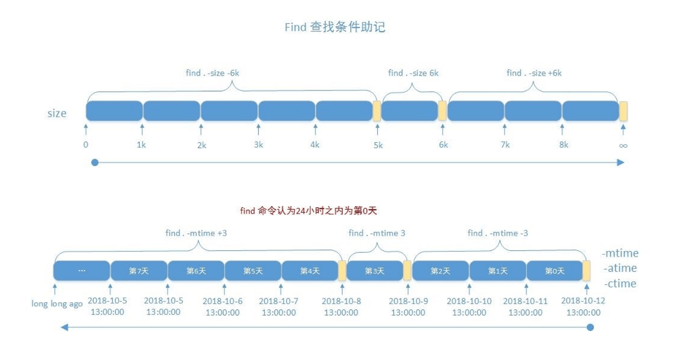

文件查找 locate
locate 查询系统上预建的文件索引数据库 /var/lib/mlocate/mlocate.db
索引的构建是在系统较为空闲时自动进行(周期任务)，执行updatedb可以更新数据库
索引构建过程需要遍历整个根文件系统，很消耗资源
locate和update命令来自于mlocate包
工作特点：
查找速度快 模糊查找
非实时查找
搜索的是文件全路径，不仅仅是文件名
可能只搜索用户具备读取和执行权限的目录
如果没有程序，可先安装
1 2 3 4 5 yum install -y mlocate apt install -y mlocate
格式
1 2 3 4 5 6 7 8 9 10 11 12 13 14 15 16 17 18 locate [OPTION]... [PATTERN]... -A|--all -b|--basename -c|--count -d｜--database DBPATH -e|--existing -L|--follow -n -i|--ignore-case -l|--limit |-n N -P|--nofollow, -H -q|--quiet -r|--regexp REGEXP --regex -s|--stdio -w|--wholename
范例：locatedb创建数据库
1 2 3 4 5 6 7 8 9 10 11 12 13 [root@rocky8 ~] [root@rocky86 ~] locate: can not stat () `/var/lib/mlocate/mlocate.db': No such file or directory [root@rocky8 ~]# updatedb [root@rocky8 ~]# ll /var/lib/mlocate/mlocate.db -rw-r----- 1 root slocate 3143608 Jun 18 08:58 /var/lib/mlocate/mlocate.db [root@rocky8 ~]# locate -n 3 conf /boot/config-4.18.0-348.el8.0.2.x86_64 /boot/grub2/i386-pc/configfile.mod /boot/loader/entries/c0298860b41f4cd296da0d2853451604-0-rescue.conf
范例：文件新创建和删除，无法马上更新locate数据库
1 2 3 4 5 6 7 8 9 10 11 12 13 14 15 16 17 18 19 20 21 22 [root@rocky86 ~] [root@rocky86 ~] [root@rocky86 ~] [root@rocky86 ~] /root/test.log [root@rocky86 ~] [root@rocky86 ~] /root/test.log [root@rocky86 ~] stat : cannot statx '/root/test.log' : No such file or directory [root@rocky86 ~] [root@rocky86 ~] [root@rocky86 ~]
范例：
1 2 3 4 5 6 7 8 9 10 11 12 13 14 15 16 17 18 19 20 21 22 23 24 [root@rocky86 ~] [root@rocky86 ~] [root@rocky86 ~] [root@rocky86 ~] [root@rocky86 ~] [root@rocky86 ~] [root@rocky86 ~] locate: can not stat () `/tmp/nofile': No such file or directory #安静模式，不输出错误信息 [root@rocky86 ~]# locate -qd /tmp/nofile conf
find find 是实时查找工具，通过遍历指定路径完成文件查找；
工作特点：
查找速度略慢
精确查找
实时查找
查找条件丰富
可能只搜索用户具备读取和执行权限的目录
格式：
1 2 3 find [OPTION]... [查找路径] [查找条件] [处理动作]
查找路径：指定具体目标路径；默认为当前目录
查找条件：指定的查找标准，可以文件名、大小、类型、权限等标准进行；默认为找出指定路径下的所有文件
处理动作：对符合条件的文件做操作，默认输出至屏幕
范例：
默认列出当前目录下的所有文件
1 2 3 4 5 6 7 8 [root@rocky8 ~] . ./.vimrc ./.bash_logout ./.bash_profile ./.cshrc ./.tcshrc ./.bash_history
指定搜索目录层级 1 2 -maxdepth N -mindepth N
范例：
1 2 3 4 5 6 7 8 [root@rocky86 ~] [root@rocky86 ~] [root@rocky86 ~]
先处理文件再处理目录 范例：
1 2 3 4 5 6 7 8 9 10 11 12 13 14 15 16 17 18 19 20 21 22 23 24 25 26 27 28 29 30 31 32 33 34 35 36 37 38 39 40 41 42 43 44 45 46 [root@rocky8 ~] [root@rocky8 0723] [root@rocky8 0723] . ├── dir1 │ ├── dir2 │ │ ├── dir3 │ │ │ ├── fx │ │ │ └── fy │ │ ├── fa │ │ └── fb │ ├── f1 │ └── f2 ├── fstab └── .issue [root@rocky86 0723] . ./dir1 ./dir1/dir2 ./dir1/dir2/dir3 ./dir1/dir2/dir3/fx ./dir1/dir2/dir3/fy ./dir1/dir2/fa ./dir1/dir2/fb ./dir1/f1 ./dir1/f2 ./fstab ./.issue [root@rocky86 0723] ./dir1/dir2/dir3/fx ./dir1/dir2/dir3/fy ./dir1/dir2/dir3 ./dir1/dir2/fa ./dir1/dir2/fb ./dir1/dir2 ./dir1/f1 ./dir1/f2 ./dir1 ./fstab ./.issue .
根据文件名和inode查找 1 2 3 4 5 6 -name name -iname name -inum number -samefile name -links n -regex "PATTERN"
范例：
1 2 3 4 5 6 7 8 9 10 11 12 13 14 15 16 17 18 19 20 21 22 23 24 25 26 27 28 29 30 31 32 33 34 35 36 37 38 39 40 41 42 43 44 45 46 [root@rocky8 0723] [root@rocky8 0723] [root@rocky8 0723] dir1 test-a.log test-a.txt test-b.log test-b.txt fstab test-A.log test-A.txt test-B.log test-B.txt [root@rocky86 0723] ./test-a.log ./test-A.log [root@rocky86 0723] ./test-a.txt ./test-b.txt ./test-A.txt ./test-B.txt [root@rocky86 0723] ./test-a.log ./test-a.txt [root@rocky86 0723] ./test-a.log ./test-b.log ./test-A.log ./test-B.log [root@rocky86 0723] ./test-a.log ./test-a.txt ./test-b.log ./test-b.txt [root@rocky86 0723] ./dir1/dir2/dir3 ./dir1/dir2/dir3/fx ./dir1/dir2/dir3/fy [root@rocky86 0723] ./dir1/dir2/dir3
根据属主属组查找 1 2 3 4 5 6 -user USERNAME -group GRPNAME -uid UserID -gid GroupID -nouser -nogroup
范例：
1 2 3 4 5 6 7 8 9 10 11 12 13 14 15 16 17 18 19 20 21 22 23 24 25 26 27 28 29 30 31 32 33 34 35 36 37 38 39 40 41 42 43 44 45 46 47 48 49 50 51 52 53 54 55 56 57 58 59 60 61 [root@rocky86 0723] total 0 drwxr-xr-x 3 root root 38 Jul 23 10:21 dir2 -rw-r--r-- 1 123 456 0 Jul 23 10:14 f1 -rw-r--r-- 1 789 root 0 Jul 23 10:14 f2 -rw-r--r-- 1 jose root 0 Jul 23 10:48 fa.txt -rw-r--r-- 1 jose root 0 Jul 23 10:48 fb.txt -rw-r--r-- 1 root mage 0 Jul 23 10:48 fc.txt -rw-r--r-- 1 root mage 0 Jul 23 10:48 fd.txt [root@rocky86 0723] ./dir1/fa.txt ./dir1/fb.txt [root@rocky86 0725] ./fa.txt ./fb.txt [root@rocky86 0723] ./dir1/fc.txt ./dir1/fd.txt [root@rocky86 0725] ./fc.txt ./fd.txt [root@rocky86 0723] ./dir1/fa.txt ./dir1/fb.txt [root@rocky86 0723] ./dir1/fa.txt ./dir1/fb.txt [root@rocky86 0723] ./dir1/f1 [root@rocky86 0723] ./dir1/fa.txt ./dir1/fb.txt [root@rocky86 0723] ./dir1/f1 ./dir1/f2 [root@rocky86 0723] ./dir1/f1 [root@rocky86 0723] ./dir1/f1
根据文件类型查找 1 2 3 4 5 6 7 8 9 10 -type TYPE f d l s b c p
范例：
1 2 3 4 5 6 7 8 9 [root@rocky86 0723] . ./dir1 ./dir1/dir2 ./dir1/dir2/dir3 [root@rocky86 0723]
空文件或目录 范例：
1 2 3 4 5 6 7 8 9 10 11 12 13 14 [root@rocky86 0723] dir1/dir2/dir3/fx dir1/dir2/dir3/fy dir1/dir2/dir3/dir4 [root@rocky86 0723] dir1/dir2/dir3/dir4 [root@rocky86 0723] dir1/dir2/dir3/fx dir1/dir2/dir3/fy
组合条件 范例：
1 2 3 4 5 6 7 8 9 10 11 12 13 14 15 16 17 18 19 20 21 22 23 [root@rocky86 0723] ./test-a.log ./test-b.log ./test-A.log ./test-B.log [root@rocky86 0723] ./test-a.log ./test-a.txt ./test-b.log ./test-b.txt [root@rocky86 0723] dir1/dir2/dir3/fx dir1/dir2/dir3/fy [root@rocky86 0723] dir1/dir2/dir3/fx dir1/dir2/dir3/fy
范例：配合处理动作
1 2 3 4 5 6 7 8 9 10 11 12 13 14 15 16 17 18 19 20 21 22 23 [root@rocky86 0723] ./dir1/fa.txt ./dir1/fb.txt ./test-a.log ./test-b.log ./test-A.log ./test-B.log [root@rocky8 0723] 816459 0 -rw-r--r-- 1 root root 0 Oct 13 16:55 ./test-a.log 816460 0 -rw-r--r-- 1 root root 0 Oct 13 16:55 ./test-A.log 816461 0 -rw-r--r-- 1 root root 0 Oct 13 16:55 ./test-b.log 816462 0 -rw-r--r-- 1 root root 0 Oct 13 16:55 ./test-B.log [root@rocky8 0723] 134688729 0 -rw-r--r-- 1 jose root 0 Oct 13 17:52 ./dir1/fa.txt 134688730 0 -rw-r--r-- 1 jose root 0 Oct 13 17:53 ./dir1/fb.txt 816459 0 -rw-r--r-- 1 root root 0 Oct 13 16:55 ./test-a.log 816460 0 -rw-r--r-- 1 root root 0 Oct 13 16:55 ./test-A.log 816461 0 -rw-r--r-- 1 root root 0 Oct 13 16:55 ./test-b.log 816462 0 -rw-r--r-- 1 root root 0 Oct 13 16:55 ./test-B.log
德·摩根定律：
(非A)且(非B)=非(A或B)
(非A)或(非B)=非(A且B)
示例：
1 2 !A -a !B = !(A -o B) !A -o !B = !(A -a B)
示例：
1 2 3 4 5 6 7 8 9 10 11 12 13 14 15 16 17 18 19 20 21 22 23 24 25 26 27 28 29 30 31 32 33 34 35 36 37 38 39 [root@rocky8 0723] . ./.issue ./test-a.log ./test-A.log ./test-b.log ./test-B.log ./test-a.txt ./test-A.txt ./test-b.txt ./test-B.txt [root@rocky8 0723] ./ ./.issue ./test-a.log ./test-A.log ./test-b.log ./test-B.log ./test-a.txt ./test-A.txt ./test-b.txt ./test-B.txt [root@rocky8 0723] . ./dir1 ./dir1/dir2 ./dir1/dir2/dir3 [root@rocky8 0723] . ./dir1 ./dir1/dir2 ./dir1/dir2/dir3
排除目录 范例：
1 2 3 4 5 6 7 8 9 10 11 12 13 14 15 16 17 18 19 20 21 22 23 24 25 26 27 28 [root@rocky86 0723] ./dir1/fa.txt ./dir1/fb.txt ./test-a.txt ./test-b.txt ./dir4/f-x.txt ./dir4/f-y.txt [root@rocky86 0723] ./dir1 ./test-a.txt ./test-b.txt ./dir4/f-x.txt ./dir4/f-y.txt [root@rocky86 0723] ./test-a.txt ./test-b.txt ./dir4/f-x.txt ./dir4/f-y.txt [root@rocky86 0723] ./test-a.txt ./test-b.txt
根据文件大小来查找 1 2 3 4 5 6 -size [+|-]N UNIT 10k -10k +10k
范例：
1 2 3 4 5 6 7 8 9 10 11 12 13 14 15 16 17 18 19 [root@rocky8 0723] 335686295 8 -rw-r----- 1 root root 4464 Sep 9 15:21 /var/log/firewalld 269307741 8 -rw-r--r-- 1 root root 4685 Sep 9 15:41 /var/log/httpd/access_log-20240918 269184430 8 -rw-r--r-- 1 root root 4321 Sep 29 09:10 /var/log/httpd/error_log-20240929 [root@rocky8 0723] 473414 4 -rw------- 1 root root 239 Sep 29 08:13 /var/log/sssd/sssd_implicit_files.log-20240929.gz [root@rocky8 0723] 473419 12 -rw------- 1 root root 9617 Sep 29 09:10 /var/log/sssd/sssd.log-20240929.gz 808277 8 -rw------- 1 root root 5783 Sep 29 08:13 /var/log/sssd/sssd_nss.log-20240929.gz [root@rocky8 0723] 808277 8 -rw------- 1 root root 5783 Sep 29 08:13 /var/log/sssd/sssd_nss.log-20240929.gz
根据时间戳 1 2 3 4 5 6 7 8 9 10 11 12 13 14 -atime [+|-]N -mtime [+|-]N -ctime [+|-]N -amin [+|-]N -mmin [+|-]N -cmin [+|-]N N +N -N
范例：
1 2 3 4 5 [root@rocky86 0724] [root@rocky86 0724]

根据权限查找 1 2 3 4 5 6 7 8 -perm [/|-]MODE MODE /MODE +MODE -MODE
范例：
1 2 3 4 5 6 7 8 9 10 11 12 13 14 15 16 17 18 19 20 21 22 23 24 25 26 27 28 29 30 31 32 33 34 35 36 37 38 39 40 41 42 43 44 45 46 47 48 49 50 51 [root@rocky86 0724] total 0 ---------- 1 root root 0 Jul 25 09:12 f-1.txt -r--r--r-- 1 root root 0 Jul 25 09:12 f-2.txt --w--w--w- 1 root root 0 Jul 25 09:12 f-3.txt ---x--x--x 1 root root 0 Jul 25 09:17 f-4.txt -rw-r--r-- 1 root root 0 Jul 25 09:17 f-5.txt -rwxrwxrwx 1 root root 0 Jul 25 09:17 f-6.txt -r---w---x 1 root root 0 Jul 25 09:22 f-8.txt [root@rocky8 0723] 816460 0 -r--r--r-- 1 root root 0 Oct 13 18:41 ./f-2.txt [root@rocky8 0723] 816458 0 drwxr-xr-x 2 root root 125 Oct 13 18:43 . 402653958 0 -rw-r--r-- 1 root root 0 Oct 13 16:52 ./.issue 816460 0 -r--r--r-- 1 root root 0 Oct 13 18:41 ./f-2.txt 816463 0 -rw-r--r-- 1 root root 0 Oct 13 18:41 ./f-5.txt 816464 0 -rwxrwxrwx 1 root root 0 Oct 13 18:41 ./f-6.txt 816466 0 -r---w---x 1 root root 0 Oct 13 18:41 ./f-8.txt [root@rocky8 0723] find: invalid mode ‘+444’ [root@rocky8 0723] 816458 0 drwxr-xr-x 2 root root 125 Oct 13 18:43 . 402653958 0 -rw-r--r-- 1 root root 0 Oct 13 16:52 ./.issue 816460 0 -r--r--r-- 1 root root 0 Oct 13 18:41 ./f-2.txt 816463 0 -rw-r--r-- 1 root root 0 Oct 13 18:41 ./f-5.txt 816464 0 -rwxrwxrwx 1 root root 0 Oct 13 18:41 ./f-6.txt [root@rocky8 0723] 816458 0 drwxr-xr-x 2 root root 125 Oct 13 18:43 . 402653958 0 -rw-r--r-- 1 root root 0 Oct 13 16:52 ./.issue 816460 0 -r--r--r-- 1 root root 0 Oct 13 18:41 ./f-2.txt 816461 0 --w--w--w- 1 root root 0 Oct 13 18:41 ./f-3.txt 816463 0 -rw-r--r-- 1 root root 0 Oct 13 18:41 ./f-5.txt 816464 0 -rwxrwxrwx 1 root root 0 Oct 13 18:41 ./f-6.txt 816466 0 -r---w---x 1 root root 0 Oct 13 18:41 ./f-8.txt [root@rocky8 0723] 816458 0 drwxr-xr-x 2 root root 125 Oct 13 18:43 . 402653958 0 -rw-r--r-- 1 root root 0 Oct 13 16:52 ./.issue 816463 0 -rw-r--r-- 1 root root 0 Oct 13 18:41 ./f-5.txt 816464 0 -rwxrwxrwx 1 root root 0 Oct 13 18:41 ./f-6.txt
正则表达式 1 2 -regextype type -regex pattern
范例：
1 2 3 4 5 [root@rocky86 0724] ./ls.log [root@rocky86 0724] ./f-5.txt
处理动作 1 2 3 4 5 6 7 8 -print -print0 -ls -fls file -delete -ok COMMAND {} \; -exec COMMAND {} \; {}
范例：
1 2 3 4 5 6 7 8 9 10 11 12 13 14 15 16 17 18 19 20 21 22 23 24 25 26 27 28 29 30 31 32 33 34 35 [root@rocky86 0724] . ./f-1.txt ./f-2.txt ./f-3.txt [root@rocky8 0723] 816458 0 drwxr-xr-x 2 root root 125 Oct 13 18:43 . 402653958 0 -rw-r--r-- 1 root root 0 Oct 13 16:52 ./.issue 816459 0 ---------- 1 root root 0 Oct 13 18:41 ./f-1.txt 816460 0 -r--r--r-- 1 root root 0 Oct 13 18:41 ./f-2.txt [root@rocky86 0724] [root@rocky86 0724] [root@rocky86 0724] [root@rocky86 0724] f-1.log f-1.log.bak f-2.log f-2.log.bak f-3.log f-3.log.bak [root@rocky86 0724] < rm ... ./f-1.txt > ? [root@rocky86 0724] [root@rocky86 0724]
参数替换xargs 由于很多命令不支持管道|来传递参数，为了使用更灵活的参数，我们就城要用 xargs 产生命令参数，
xargs 可以读入 stdin 的数据，并且以空格符或回车符将 stdin 的数据分隔，使其成为另一个命令的参数，
另外，许多命令不能接受过多参数，命令执行可能会失败，xargs 也可以解决此问题；
格式：
1 2 3 4 5 6 7 8 9 10 11 12 13 14 15 xargs [OPTION]... COMMAND [INITIAL-ARGS]... -0|--null -a|--arg-file=FILE -d|--delimiter=CHARACTER -E END -L|--max-lines=N -l -n|--max-args=MAX-ARGS -p|--interactive -r|--no-run-if-empty -s|--max-chars=MAX-CHARS -t|--verbose -x|--exit
范例：
1 2 3 4 5 6 7 8 9 10 11 12 13 14 15 16 17 18 19 20 21 22 23 24 25 26 27 28 29 [root@rocky86 0724] f-1.log [root@rocky86 0724] ... ... [root@rocky86 0724] f-1.txt [root@rocky86 0724] f-1.log [root@rocky86 0724] f-1.log -rw-r--r-- 1 root root 0 Jul 25 09:43 f-1.log [root@rocky86 0724] f-1.log f-2.log [root@rocky86 0724] -rw-r--r-- 1 root root 0 Jul 25 09:43 f-1.log -rw-r--r-- 1 root root 0 Jul 25 09:43 f-2.log
范例：
1 2 3 4 5 6 7 8 9 10 11 12 13 14 15 16 17 18 19 20 21 22 23 24 25 26 27 28 29 30 31 32 33 34 [root@rocky86 0724] 1 2 3 [root@rocky86 ~] 1 2 3 [root@rocky86 ~] 1 2 3 [root@rocky86 0724] 1 2 3 4 5 [root@rocky86 0724] 1 2 3 4 5 [root@rocky86 0724] 1 2 3 4 5 [root@rocky86 0724] useradd user1 useradd user2 useradd user3 useradd user4 useradd user5 [root@rocky86 0724]
范例：批量创建文件
1 2 3 4 5 6 7 8 9 10 11 12 13 14 15 16 17 18 19 20 21 [root@rocky8 0723] Filesystem Inodes IUsed IFree IUse% Mounted on devtmpfs 224364 398 223966 1% /dev tmpfs 229154 1 229153 1% /dev/shm tmpfs 229154 612 228542 1% /run tmpfs 229154 17 229137 1% /sys/fs/cgroup /dev/mapper/rl-root 68157440 61837 68095603 1% / /dev/sda1 524288 310 523978 1% /boot /dev/mapper/rl-home 34078720 51 34078669 1% /home tmpfs 229154 5 229149 1% /run/user/0 [root@rocky86 test ] -bash: /usr/bin/touch: Argument list too long [root@rocky86 test ] [root@rocky86 test ]
范例：批量下载B站视频
1 2 3 4 5 6 7 8 9 10 11 12 13 [root@rocky86 ~] [root@rocky86 ~] [root@rocky86 ~] sudo dnf update sudo dnf install python3-devel [root@rocky86 ~]
范例：以 ascii中的空白符分隔参数
1 2 3 4 5 6 7 8 9 10 11 12 13 14 15 [root@rocky86 0724] 'a b' f-1.txt f-2.txt f-3.txt [root@rocky86 0724] ./f-1.txt ./f-2.txt ./f-3.txt ./a b [root@rocky86 0724] ls : cannot access './a' : No such file or directory ls : cannot access 'b' : No such file or directory ./f-1.txt ./f-2.txt ./f-3.txt [root@rocky86 0724] './a b' ./f-1.txt ./f-2.txt ./f-3.txt
练习
查找/var目录下属主为root，且属组为mail的所有文件
查找/var目录下不属于root、lp、gdm的所有文件
查找/var目录下最近一周内其内容修改过，同时属主不为root，也不是postfix的文件
查找当前系统上没有属主或属组，且最近一个周内曾被访问过的文件
查找/etc目录下大于1M且类型为普通文件的所有文件
查找/etc目录下所有用户都没有写权限的文件
查找/etc目录下至少有一类用户没有执行权限的文件
查找/etc/init.d目录下，所有用户都有执行权限，且其它用户有写权限的文件
压缩和解压缩 主要针对单个文件压缩，而非目录
compress 和 uncompress 此工具来自于ncompress包,此工具目前已经很少使用
对应的文件是 .Z 后缀
格式
范例：
1 2 3 4 5 6 7 8 9 10 11 12 13 14 15 16 17 18 19 20 21 22 23 24 25 [root@rocky86 0726] fstab [root@rocky86 0726] [root@rocky86 0726] fstab.Z [root@rocky86 0726] [root@rocky86 0726] fstab [root@rocky86 0726] fstab: -- replaced with fstab.Z Compression: 33.88% [root@rocky86 0726] fstab.Z: -- replaced with fstab [root@rocky86 0726] [root@rocky86 0726] fstab fstab.Z
范例：递归压缩目录
1 2 3 4 5 6 7 8 9 10 11 12 13 14 15 16 17 18 19 20 21 22 23 24 25 26 27 28 29 30 [root@rocky86 0726] dir1/ ├── dir2 │ └── messages ├── dnf.log ├── fstab └── passwd 1 directory, 4 files [root@rocky86 0726] dir1//dir2/messages: -- replaced with dir1//dir2/messages.Z Compression: 71.74% dir1//fstab: -- replaced with dir1//fstab.Z Compression: 33.88% dir1//dnf.log: -- replaced with dir1//dnf.log.Z Compression: 80.21% dir1//passwd: -- replaced with dir1//passwd.Z Compression: 45.24% [root@rocky86 0726] dir1/ ├── dir2 │ └── messages.Z ├── dnf.log.Z ├── fstab.Z └── passwd.Z 1 directory, 4 files [root@rocky86 0726] dir1//dir2/messages.Z: -- replaced with dir1//dir2/messages dir1//fstab.Z: -- replaced with dir1//fstab dir1//dnf.log.Z: -- replaced with dir1//dnf.log dir1//passwd.Z: -- replaced with dir1//passwd
gzip和gunzip 来自于 gzip 包
对应的文件是 .gz 后缀
格式：
1 2 3 4 5 6 7 8 9 10 11 12 13 14 15 16 17 gzip [OPTION]... FILE ... gunzip [OPTION]... FILE ... -c|--stdout -d|--decompress -f|--force -k|--keep -l|--list -q|--quiet -r｜--recursive -S|--suffix=SUF -t|--test -v|--verbose -1|--fast -9|--best -N
范例：
1 2 3 4 5 6 7 8 9 10 11 12 13 14 15 16 17 18 19 20 21 22 23 24 25 26 27 28 29 30 31 32 33 34 35 [root@rocky86 0726] fstab: 50.3% -- created fstab.gz passwd: 61.2% -- created passwd.gz [root@rocky86 0726] dir1 fstab fstab.gz passwd passwd.gz shadow [root@rocky86 0726] [root@rocky86 0726] [root@rocky86 0726] fstab: 50.3% -- created fstab.gzzz [root@rocky86 0726] dir1/dir2/messages: 86.1% -- created dir1/dir2/messages.gz dir1/fstab: 50.3% -- created dir1/fstab.gz dir1/dnf.log: 91.2% -- created dir1/dnf.log.gz dir1/passwd: 61.2% -- created dir1/passwd.gz [root@rocky86 0726] compressed uncompressed ratio uncompressed_name 382 720 50.3% fstab [root@rocky86 0726] compressed uncompressed ratio uncompressed_name 382 720 50.3% fstab 1134 2858 61.2% passwd 1516 3578 58.3% (totals)
范例：
1 2 3 4 [root@rocky86 0726] fstab.gz: 50.3% -- replaced with fstab passwd.gz: 61.2% -- replaced with passwd
bzip2和bunzip2 来自于 bzip2 包
对应的文件是 .bz2 后缀
格式：
1 2 3 4 5 6 7 8 9 10 11 12 13 14 15 bzip2 [OPTION]... FILE ... bunzip2 [OPTION]... FILE ... -d|--decompress -z|--compress -k|--keep -f|--force -t|--test -c|--stdout -q|--quiet -v|--verbose -N --fast --best
范例：
1 2 3 4 5 6 7 8 9 10 11 12 13 14 15 16 17 18 19 [root@rocky86 0726] fstab: 1.731:1, 4.622 bits/byte, 42.22% saved, 720 in , 416 out. passwd: 2.516:1, 3.180 bits/byte, 60.25% saved, 2858 in , 1136 out. [root@rocky86 0726] fstab: 1.731:1, 4.622 bits/byte, 42.22% saved, 720 in , 416 out. [root@rocky86 0726] (stdin): 1.731:1, 4.622 bits/byte, 42.22% saved, 720 in , 416 out. [root@rocky86 0726] fstab.bz2: done [root@rocky86 0726]
xz 和 unxz 来自于 xz 包
对应的文件是 .xz 后缀
格式
1 2 3 4 5 6 7 8 9 10 11 12 13 14 15 xz [OPTION]... FILE ... unxz [OPTION]... FILE ... -z|--compress -d|--decompress -t|--test -l|--list -k|--keep -f|--force -c|--stdout -T|--threads=NUM -q|--quiet -v|--verbose -N
范例：
1 2 3 4 5 6 7 8 9 10 11 12 13 14 15 16 17 18 19 20 21 [root@rocky86 0726] messages (1/1) 100 % 29.5 KiB / 393.1 KiB = 0.075 [root@rocky86 0726] Strms Blocks Compressed Uncompressed Ratio Check Filename 1 1 29.5 KiB 393.1 KiB 0.075 CRC64 messages.xz [root@rocky86 0726] messages (1/1) 100 % 29.5 KiB / 393.1 KiB = 0.075 [root@rocky86 0726] fstab.xz (1/2) 100 % 444 B / 720 B = 0.617 msg.xz (2/2) 100 % 29.5 KiB / 393.1 KiB = 0.075
zip 和 unzip zip 可以实现打包目录和多个文件成一个文件并压缩，但可能会丢失文件属性信息，如：所有者和组信息
分别来自于 zip 和 unzip 包
对应的文件是 .zip 后缀
格式：
1 2 3 4 5 6 7 8 9 10 11 12 13 14 15 16 17 18 19 20 21 22 23 24 25 26 27 28 29 30 31 32 33 34 35 36 37 38 39 40 41 42 43 44 45 46 47 48 zip [OPTION]... zipfile [FILE]... unzip [OPTION]... zipfile [FILE]... -f -u -d -m -r -j -l -1 -9 -q -v -c -z -x -i -D -T -X -y -n -P -p -l -t -z -v -x -d -n -q -o -a -j -C -L -X -V -K -M
范例：
1 2 3 4 5 6 7 8 9 10 11 12 13 14 15 16 17 18 19 20 21 22 23 24 25 26 27 28 29 30 31 32 33 34 35 36 37 [root@rocky86 0726] adding: messages (in =402508) (out=56530) (deflated 86%) total bytes=402508, compressed=56530 -> 86% savings [root@rocky86 0726] Archive: msg.zip Length Date Time Name --------- ---------- ----- ---- 402508 07-26-2022 09:03 messages --------- ------ 402508 1 file [root@rocky86 0726] [root@rocky86 0726] Archive: msg.zip Length Date Time Name --------- ---------- ----- ---- 402508 07-26-2022 09:03 messages 2858 07-25-2022 22:09 passwd --------- ------- 405366 2 files [root@rocky86 0726] adding: f1.txt (deflated 86%) adding: f2.txt (deflated 86%) adding: f3.txt (deflated 86%) [root@rocky86 0726] adding: f1.txt (stored 0%) adding: f2.txt (deflated 86%) adding: f3.txt (deflated 86%)
范例：递归压缩
1 2 3 4 5 6 7 8 9 10 11 12 13 14 15 16 17 18 19 20 21 22 23 24 25 26 27 28 29 30 31 32 33 34 35 36 37 38 39 40 41 42 43 44 45 46 47 48 49 50 51 52 53 54 55 56 [root@rocky86 0726] dir1/ ├── dir2 │ └── messages ├── dnf.log ├── fstab └── passwd 1 directory, 4 files [root@rocky86 0726] adding: dir1/ (stored 0%) adding: dir1/dir2/ (stored 0%) adding: dir1/dir2/messages (deflated 86%) adding: dir1/fstab (deflated 50%) adding: dir1/passwd (deflated 61%) adding: dir1/dnf.log (deflated 91%) [root@rocky86 0726] [root@rocky86 dir1] adding: dir2/ (stored 0%) adding: dnf.log (deflated 91%) adding: fstab (deflated 50%) adding: passwd (deflated 61%) [root@rocky86 dir1] [root@rocky86 0726] -rw-r--r-- 1 root root 76768 Jul 26 15:02 test1.zip -rw-r--r-- 1 root root 46255 Jul 26 15:02 test2.zip [root@rocky86 0726] Archive: test1.zip Length Date Time Name --------- ---------- ----- ---- 0 07-26-2022 15:01 dir1/ 0 07-25-2022 22:30 dir1/dir2/ 216607 07-25-2022 21:41 dir1/dir2/messages 720 07-25-2022 21:39 dir1/fstab 2858 07-25-2022 21:43 dir1/passwd 501645 07-25-2022 21:40 dir1/dnf.log --------- ------ 721830 6 files [root@rocky86 0726] Archive: test2.zip Length Date Time Name --------- ---------- ----- ---- 0 07-25-2022 22:30 dir2/ 501645 07-25-2022 21:40 dnf.log 720 07-25-2022 21:39 fstab 2858 07-25-2022 21:43 passwd --------- ------ 505223 4 files
范例：设置密码
1 2 3 4 5 6 7 8 9 10 11 12 13 14 15 16 17 18 19 20 [root@rocky86 dir1] adding: dnf.log (in =501645) (out=44208) (deflated 91%) total bytes=501645, compressed=44220 -> 91% savings [root@rocky86 dir1] Archive: test.zip inflating: dnf.log [root@rocky86 dir1] Enter password: Verify password: updating: dnf.log (in =501645) (out=44208) (deflated 91%) total bytes=501645, compressed=44220 -> 91% savings [root@rocky86 dir1] Archive: test.zip [test.zip] dnf.log password: inflating: dnf.log
范例：更新和删除
1 2 3 4 5 6 7 8 9 10 11 12 13 14 15 16 17 18 19 20 21 22 23 24 25 26 27 28 29 30 31 32 33 34 35 36 37 38 39 40 41 42 43 44 45 46 47 48 49 50 51 52 53 54 55 56 57 58 59 60 61 62 63 [root@rocky86 0726] Archive: txt.zip Length Date Time Name --------- ---------- ----- ---- 2226376 07-26-2022 14:12 f1.txt 1946847 07-26-2022 14:09 f2.txt 1814952 07-26-2022 14:09 f3.txt --------- ------ 5988175 3 files [root@rocky86 0726] [root@rocky86 0726] -rw------- 1 root root 4 Jul 26 14:19 f1.txt -rw-r--r-- 1 root root 2858 Jul 25 22:09 passwd [root@rocky86 0726] updating: f1.txt (in =4) (out=4) (stored 0%) adding: passwd (in =2858) (out=1109) (deflated 61%) total bytes=3764661, compressed=525257 -> 86% savings [root@rocky86 0726] Archive: txt.zip Length Date Time Name --------- ---------- ----- ---- 4 07-26-2022 14:19 f1.txt 1946847 07-26-2022 14:09 f2.txt 1814952 07-26-2022 14:09 f3.txt 2858 07-25-2022 22:09 passwd --------- ------- 3764661 4 files [root@rocky86 0726] freshening: f1.txt (in =7) (out=7) (stored 0%) total bytes=3764664, compressed=525260 -> 86% savings [root@rocky86 0726] Archive: txt.zip Length Date Time Name --------- ---------- ----- ---- 7 07-26-2022 14:24 f1.txt 1946847 07-26-2022 14:09 f2.txt 1814952 07-26-2022 14:09 f3.txt 2858 07-25-2022 22:09 passwd --------- ------ 3764664 4 files [root@rocky86 0726] deleting: f3.txt [root@rocky86 0726] Archive: txt.zip Length Date Time Name --------- ---------- ----- ---- 7 07-26-2022 14:24 f1.txt 1946847 07-26-2022 14:09 f2.txt 2858 07-25-2022 22:09 passwd --------- ------ 1949712 3 files
范例：注释
1 2 3 4 5 6 7 8 9 [root@rocky86 0726] enter new zip file comment (end with .): this is test des [root@rocky86 0726] Archive: txt.zip this is test des
范例：解压缩
1 2 3 4 5 6 7 8 9 10 11 12 13 14 15 16 17 18 19 20 21 [root@rocky86 0726] Archive: txt.zip inflating: ./txt/f1.txt inflating: ./txt/f2.txt [root@rocky86 0726] total 1912 -rw-r--r-- 1 root root 4453 Jul 26 15:19 f1.txt -rw------- 1 root root 1946847 Jul 26 14:09 f2.txt [root@rocky86 0726] Archive: txt.zip Length Method Size Cmpr Date Time CRC-32 Name -------- ------ ------- ---- ---------- ----- -------- ---- 4453 Defl:N 1661 63% 07-26-2022 15:19 a30efa6e f1.txt 1946847 Defl:N 269213 86% 07-26-2022 14:09 add171e4 f2.txt 1814952 Defl:N 254931 86% 07-26-2022 14:09 eb2f160b f3.txt -------- ------- --- ------ 3766252 525805 86% 3 files
zcat zcat 来源于 “zip cat” 的缩写，见字知义
其功能是在不解压的情况下查看压缩文件内容
格式：
1 2 3 4 5 6 7 8 zcat [OPTION]... [FILE]... -c -d -l -r -t
示例：
1 2 3 [root@rocky86 0726] [root@rocky86 0726] [root@rocky86 0726]
压缩率比较 1 2 3 4 5 6 7 8 9 10 11 12 13 [root@rocky86 0725] [root@rocky86 0725] [root@rocky86 0725] [root@rocky86 0725] [root@rocky86 0725] [root@rocky86 0725] -r--r--r-- 1 root root 11M Jul 26 20:48 hwdb.bin -rw-r--r-- 1 root root 2.8M Jul 26 21:40 hwdb.bin.Z -rw-r--r-- 1 root root 2.0M Jul 26 21:41 hwdb.zip -r--r--r-- 1 root root 2.0M Jul 26 20:48 hwdb.bin.gz -r--r--r-- 1 root root 1.7M Jul 26 20:48 hwdb.bin.bz2 -r--r--r-- 1 root root 1.4M Jul 26 20:48 hwdb.bin.xz
打包和解包 tar tar 即 Tape ARchive 磁带归档，可以对目录和多个文件打包成一个文件进行归档；
其本身不具备压缩功能，但可以使用参数调用相应的压缩命令进行压缩；
此命令可以保留文件属性，推荐使用；
对应的文件是 .tar 后缀
格式：
1 2 tar [OPTION...] [FILE]...
UNIX 风格写法
1 2 3 4 5 6 7 tar -A [OPTIONS] ARCHIVE ARCHIVE tar -c [-f ARCHIVE] [OPTIONS] [FILE...] tar -d [-f ARCHIVE] [OPTIONS] [FILE...] tar -t [-f ARCHIVE] [OPTIONS] [MEMBER...] tar -r [-f ARCHIVE] [OPTIONS] [FILE...] tar -u [-f ARCHIVE] [OPTIONS] [FILE...] tar -x [-f ARCHIVE] [OPTIONS] [MEMBER...]
GNU 风格写法
1 2 3 4 5 6 7 8 9 10 tar {--catenate|--concatenate} [OPTIONS] ARCHIVE ARCHIVE tar --create [--file ARCHIVE] [OPTIONS] [FILE...] tar {--diff|--compare} [--file ARCHIVE] [OPTIONS] [FILE...] tar --delete [--file ARCHIVE] [OPTIONS] [MEMBER...] tar --append [-f ARCHIVE] [OPTIONS] [FILE...] tar --list [-f ARCHIVE] [OPTIONS] [MEMBER...] tar --test-label [--file ARCHIVE] [OPTIONS] [LABEL...] tar --update [--file ARCHIVE] [OPTIONS] [FILE...] tar --update [-f ARCHIVE] [OPTIONS] [FILE...] tar {--extract|--get} [-f ARCHIVE] [OPTIONS] [MEMBER...]
常用选项
1 2 3 4 5 6 7 8 9 10 11 12 13 -A|--catenate|--concatenate -c|--create -d|--diff|--compare --delete -r|--append -t|--list --test-label -u|--update -x|--extract|--get -f|--file=ARCHIVE
OPTIONS选项
1 2 3 4 5 6 7 8 9 10 11 12 13 14 15 16 17 18 19 20 21 22 23 24 25 26 27 28 29 30 -G|--incremental -n|--seek -S|--sparse -k|--keep-old-files -U|--unlink-first -W|--verify -O|--to-stdout --to-command=COMMAND -m|--touch -p|--preserve-permissions|--same-permissions -s|--preserve-order|--same-order -M|--multi-volume -B|--read-full-records -i|--ignore-zeros -a|--auto-compress -j|--bzip2 -J|--xz --lzip|--lzma|--lzop -z|--gzip|--gunzip|--ungzip -Z|--compress|--uncompress -h|--dereference --hard-dereference -P|--absolute-names -l|--check-links -R|--block-number -v|--verbose -w|--interactive|--confirmation -o
压缩选项
其它选项
1 2 3 4 5 6 --show-defaults --exclude -C|--directory=DIR -T|--files-from=FILE -X|--exclude-from=FILE --version
1 2 3 4 5 6 [root@rocky86 0726] tar: Removing leading `/' from member names #P保留路径 [root@rocky86 0726]# tar -cPf etc2.tar /etc
范例：
1 2 3 4 5 6 7 8 9 10 11 12 13 14 [root@rocky86 0726] f1.txt f2.txt [root@rocky86 0726] [root@rocky86 0726] 13M /var/log/ [root@rocky86 0726] -rw-r--r-- 1 root root 13M Jul 26 15:57 log.tar
范例：只打包目录内的文件，不所括目录本身
1 2 3 4 5 [root@rocky86 ~] [root@rocky86 etc] [root@rocky86 ~]
范例：追加和删除
不支持对压缩文件追加
1 2 3 4 5 6 7 8 9 10 11 12 13 14 15 16 17 18 19 20 21 22 [root@rocky86 0726] -rw-r--r-- root/root 4453 2022-07-26 15:19 f1.txt -rw------- root/root 1946847 2022-07-26 14:09 f2.txt [root@rocky86 0726] [root@rocky86 0726] -rw-r--r-- root/root 4453 2022-07-26 15:19 f1.txt -rw------- root/root 1946847 2022-07-26 14:09 f2.txt -rw------- root/root 1814952 2022-07-26 14:09 f3.txt -rw-r--r-- root/root 2858 2022-07-25 22:09 passwd [root@rocky86 0726] [root@rocky86 0726] -rw------- root/root 1814952 2022-07-26 14:09 f3.txt -rw-r--r-- root/root 2858 2022-07-25 22:09 passwd [root@rocky86 0726]
范例：列出包内文件
1 2 3 [root@rocky86 0726] -rw------- root/root 1814952 2022-07-26 14:09 f3.txt -rw-r--r-- root/root 2858 2022-07-25 22:09 passwd
范例：解包
1 2 3 4 [root@rocky86 0726] [root@rocky86 0726]
范例：打包并压缩
1 2 3 4 5 6 7 8 9 10 11 12 [root@rocky86 0726] [root@rocky86 0726] [root@rocky86 0726] root@rocky86 0726] -rw-r--r-- 1 root root 4.7M Jul 26 16:37 etc.tar.bz2 -rw-r--r-- 1 root root 6.4M Jul 26 16:36 etc.tar.gz -rw-r--r-- 1 root root 4.0M Jul 26 16:37 etc.tar.xz [root@rocky86 0726] [root@rocky86 0726] [root@rocky86 0726]
范例：从文件中读取要打包的文件
1 2 3 4 5 6 7 [root@rocky86 0726] f1.txt f2.txt [root@rocky86 0726] f1.txt f2.txt
范例：排除和包含文件
1 2 3 4 5 [root@rocky86 ~] [root@rocky86 ~]
范例：查看默认选项
1 2 [root@rocky86 0726] --format=gnu -f- -b20 --quoting-style=escape --rmt-command=/etc/rmt --rsh-command=/usr/bin/ssh
split split 命令可以分割一个文件为多个文件
格式：
1 2 3 4 5 6 7 8 split [OPTION]... [FILE [PREFIX]] -b|--bytes=SIZE -C|--line-bytes=SIZE -d -l|--lines=NUMBER --verbose
范例：
1 2 3 4 5 6 7 8 9 10 11 12 13 14 [root@rocky86 ~] [root@rocky86 ~] [root@rocky86 ~] [root@rocky86 ~] [root@rocky86 ~]